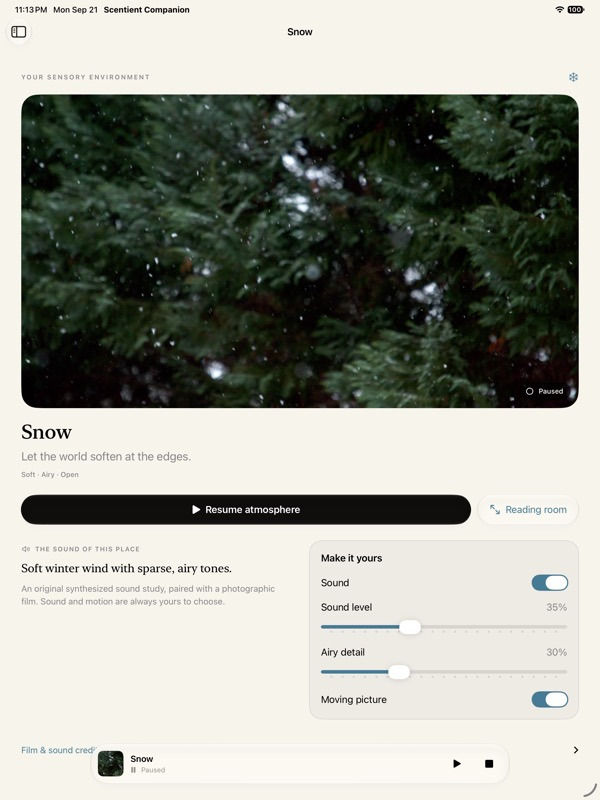

“The greenhouse after rain.
The green stems, the damp earth,
the old wooden door.”
A fictional example, showing the kind of experience we are building.
Express.
Begin with voice or text. Describe a memory in your own words, without needing to know fragrance names.
Explore.
Enter a sensory direction through imagery, atmosphere, sound, and space. Refine what fits your memory and what does not.
Encounter.
Connect the exploration with fragrances to experience through Demeter. What a scene evokes and what a fragrance smells like are distinct parts of the encounter.
Return.
Revisit the experience and describe what changed. The research asks how this continuity can make future interactions more useful.
Places to explore.
Experiences to return to.


These previews show our product direction. The connected journey is being developed across interfaces and physical fragrance experiences.
Your experience.
Your meaning.
A beautiful interpretation is only useful when the person can recognize, question, and reshape it.
Our ambition is an experience that helps people express themselves, with their own account at its center. That is also the starting point for the research.
Explore scent-memory episodes ↗